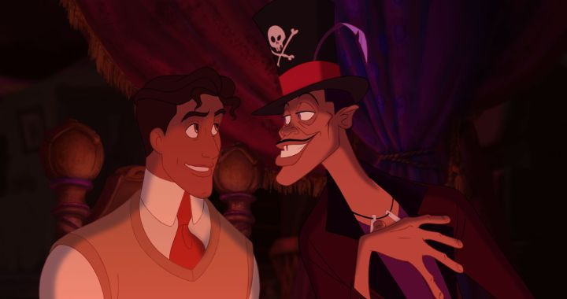

Let me set the scene first. I grew up in a world where Disney released a new animated film every single year. Some of those were the best films they've ever made. But in the early 2000's, some of those movies were clearly stumbling critically, and struggled to make their profits back. And 3D CGI animation was all the rage, not just at Pixar, but also at Dreamworks and Warner Bros and every other American studio. Even Disney, Pixar's distributor, was taking a crack at it. After a disappointing 2D film with "Home on the Range" in 2004, we got a computer-animated film in 2005. Then in 2007. And 2008. We were still getting new Disney movies, but they were all CGI. Disney abandoned the medium that made them what they were, and they were the last ones holding on when other American studios already abandoned it years earlier. 2D animation was officially dead. This did not go unnoticed. I admit I took 2D animation for granted until we didn't have it anymore, and was concerned by 2006. This was when Japanese anime and European animation filled the void for me, but it wasn't the same. And then it was announced that a new film, "The Princess and the Frog," was coming in 2009. It was celebrated by Disney as a return to 2D animation, and something for audiences and families to be excited about. Footage, character details and songs were remarkably scarce for this new princess story all the way up to the release, encouraging viewers to experience it for themselves in the theater. I didn't know what to expect, and I was blown away. From start to end, "The Princess and the Frog" was the best Disney movie I'd seen yet. By the end, I was in tears... probably a strange sight of a male teenager in an audience of familes and children. And rewatching it now, I cried again. It's that good.Among many things, the movie is remarkable for having the first African-American Disney princess (even though we'd already had other races, so this seemed especially overdue). Reading the history now, I'm shocked at some of the original ideas for the story (some initial outcries resulted in the team reworking the characters and plot a bit, and Oprah Winfrey was hired as a consultant), but am relieved with the final product and the apparent lack of racial issues. The movie is also set in New Orleans less than a century ago, just old enough to be romantic and just new enough to be recognizable. It's a colorful setting that feels fresh, and after Hurricane Katrina just a few years before the movie's release, it's nice to see the best of the city immortalized in the Disney universe. The plot also takes a few new directions to twist the original story. "Princess" Tiana isn't a princess at all, but a hard-working young woman working multiple jobs to one day open her own restaurant, a dream she and her father shared up until his passing. She has no belief in fairy tales and has no time for fun, and it seems like her hard work is about to pay off. That's a big difference from Charlotte, her childhood friend, a white girl born in a wealthy family who seemingly got everything she wanted without fuss, except her dream of marrying a prince and having a happily ever after. Meanwhile, Prince Naveen (of the fictional country of Maldonia; online viewers compared it to a number of Spanish and French countries, Morocco being the most comparable) has come to the town, cut off from his family for his lack of work-ethic, and is forced to either find a rich woman to marry or find a real job to sustain himself. Shame he can't focus while the music of jazz fills the streets of New Orleans, to his overworked butler's frustration. And Dr. Facilier, a lanky voodoo witch doctor, watches all of this in the shadows, scheming his own plans to get wealth and power. With all the characters in play, Tiana is confronted with a frog-version of Naveen, insisting that a kiss by a Princess is what he needs to become human again. She kisses him, but as she isn't a real princess, he remains a frog and now... Tiana is a frog too. Oops. A chain of events leaves them stranded in the swampy bayou outside of town, and they have to get used to their new frog bodies to find their way back. That includes surviving the new dangers that come with being frogs, like alligators and human hunters, but they find a few friends along the way, like a jazz-playing gator named Louis and a Cajun firefly named Ray. There's also a wise blind vodoo doctor in the forest named Mama Odie that gives them some advice on how to break the curse. The adventure helps Naveen learn to take some responsibility, and Tiana to have a little fun, and they find the answer to both is to have a partner (perhaps each other?) to love and inspire those elements out of them. There are so many clever nods and twists in the story. The iconic wishing star appears, and even gets a name ("Evangeline"), a seemingly throw-away detail that leads to one of the most beautiful endings I've ever seen. Breaking the curse requires doing something "before the stroke of midnight," a line that should be familar to Disney fans. Things never go as planned, and the movie seems to show off its cleverness with a brilliant solution each time. It might be one of the best stories in a Disney cartoon, easy enough to follow but dense enough to keep your attention. And I didn't know what to expect with Dr. Facilier at first. Remember, all I had before my first screening in 2009 was his image on the corner of the poster, and two seconds of animation in the teaser trailers. For some reason, I was worried he'd be like TV's Urkel from his skinny frame, poor-fitting clothes and front-teeth gap. What I got was the coolest Disney villain I'd ever seen, a deep-voiced con man that'd made too many deals with his "friends from the other side," smoothly stealing from his victims to line his pockets while keeping his debts in check. Voiced perfectly by Keith David, he steals every scene he's in. Seriously, look up the villain's musical number if you haven't seen him in action yet. In fact, all of the songs are great. To see this in a theater was a musical event, with fresh songs that'd each get stuck in your head days later. One after the other, from "Down in New Orleans," to "Alomst There," to "Friends on the Other Side," to "When We're Human," and more, each song is better than the last. I don't know if it's the New Orleans-jazz influence, or Randy Newman's fresh take on a Disney musical, but the movie is full of hits. Production-wise, the movie pulls out all the stops, within reason. New Orleans never looked this good, and the forests and murky waters of the swamps never looked so magical. It's not as majestic or ambitious as "The Hunchback of Notre Dame," but it's a great culmination of modern digital techniques (with as little CGI as possible) and classical character animation. Tiana also makes an unusually cute frog. And Dr. Facilier's shadow friends could have come out of Tim Burton's sketchbooks, just the right sense of danger to the family film. There's so much inspiration from the setting to the color palette and designs and environments. "The Princess and the Frog" made a strong box office return, but reportedly not as much as the studio had hoped. And it'd be expensive to maintain both a 2D and 3D unit, so the company clearly planned out the excuses they'd need to cut 2D animation for good, with a doomed-to-fail follow-up release of "Winnie the Pooh" in 2011. Ever since, every single trailer for a new computer-animated Disney movie on YouTube has been filled with comments lamenting how they missed 2D animation, and those comments get the most likes from other viewers, but Disney's continued to ignore it. They even created high-budget live-action remakes of their most beloved 2D films, most likely in the hopes that we'd forget the originals and stop complaining to go back in time. It hasn't worked yet. But if "The Princess and the Frog" is truly the last 2D animated fairy tale we'll ever get from Disney, at least my heart is full knowing they went off on a high note. It's one of the best they've ever made, and hasn't been topped since.
- "Ani" More reviews can be found at : https://2danicritic.github.io/ Previous review: review_The_Prince_of_Egpyt Next review: review_The_Princess_and_the_Pilot